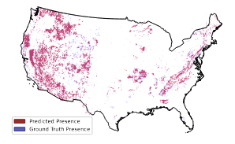
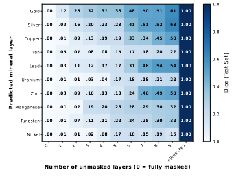
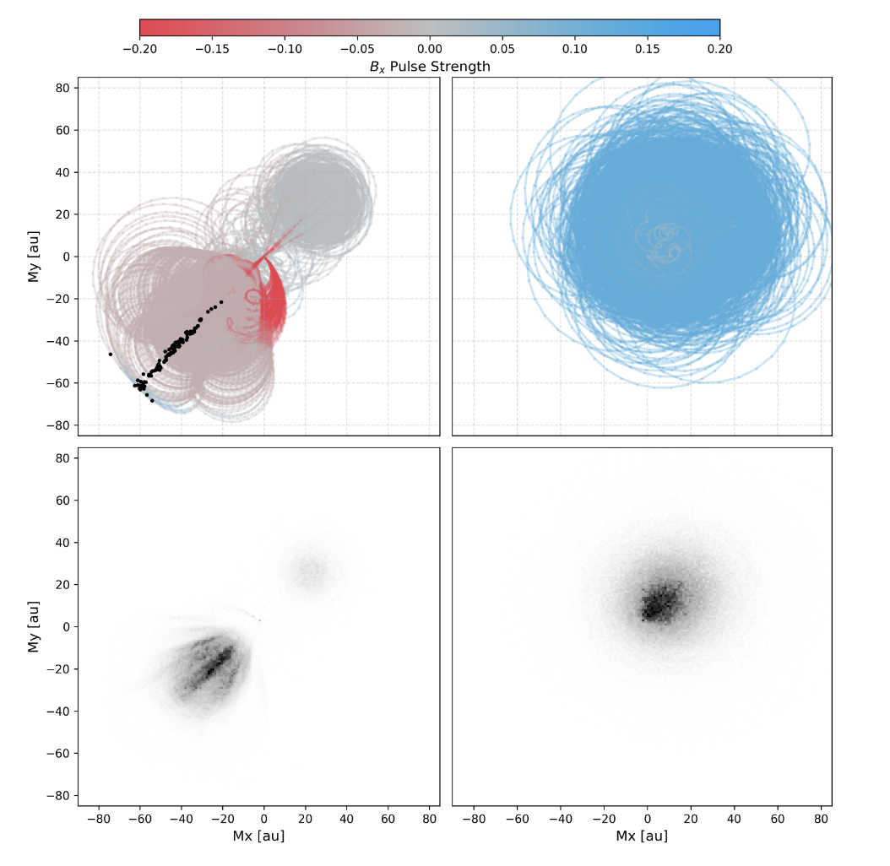
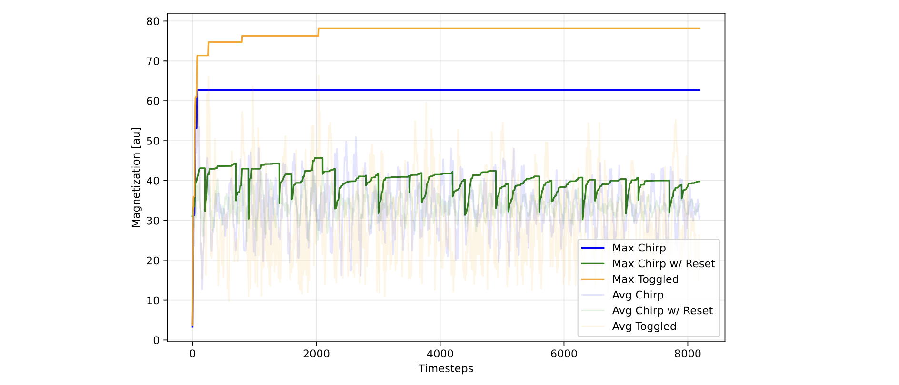
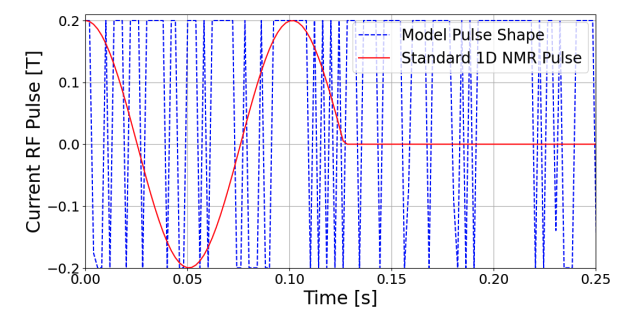
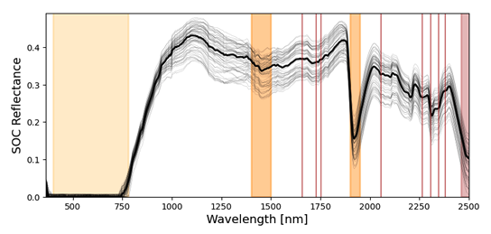
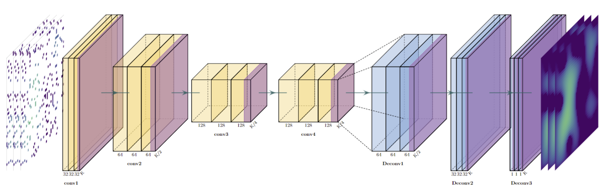
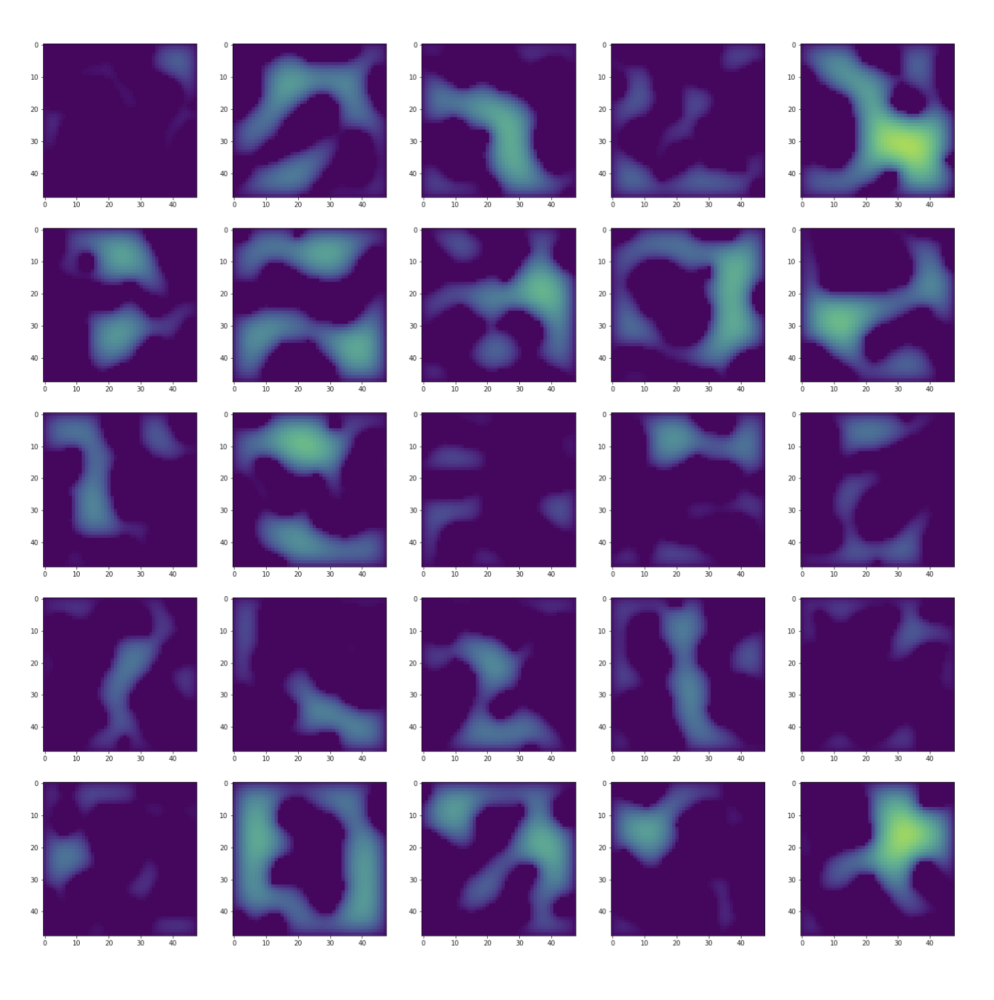
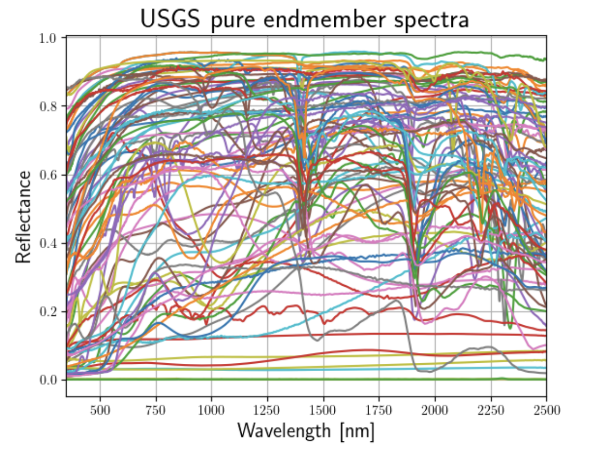

Google Scholar / Github / Resume
About me
I am a Research Scientist at MIT. I have a PhD in Theoretical High-Energy Physics from Stanford University, and I research data-driven approaches to decarbonize industry and address the impacts of climate change at scale. My current work involves the development of data-driven algorithms and hardware capable of performing context-aware, in-the-wild material characterization.
It is a massive global problem that we cannot inexpensively determine the quality, character, and contents of the materials we consume day-to-day and of the world around us in general. It is likely these problems impact you directly. My recent work tries to address some of these challenges using scalable approaches developed in the machine learning community. Here are a few examples of such problems:
- The EU Commission found evidence in 2023 that 147 of 320 honey samples collected from EU member states were illicitly diluted with sugar syrups. Recent tests in the UK suggest that number may be over 90% [scholarly source, media source].
- There is a history of cadmium and lead contamination in common food products such as chocolate [scholarly source, media source].
- When CO2 levels are elevated in the atmosphere, major food crops such as rice begin to uptake toxic levels of arsenic from their paddies [scholarly source, media source].
- We cannot reliably determine the carbon, nitrogen, nutrient, or contaminant contents of agricultural soil without sending samples to a lab.
- Some of the largest deposits of rare minerals ever recorded are only now being discovered, and they're in places where thorough surveying has already occurred [scholarly source, media source].
I believe that scalable material characterization is at the core of the climate, sustainability, and human health challenges that we face in the modern day. We should be able to track pollutants, greenhouse gas emissions, and nutrient fluxes at scale around the globe, to understand how people and industries can (A) mitigate environmental and human harms, and (B) adapt to a changing climate. You should be able to easily and personally confirm that what you think you are eating is actually what you are eating, and that the products you buy are not exposing you and your loved ones to trace contaminants. This means:
- Building flexible, non-destructive analysis techniques and hardware which can analyze the elemental contents of everyday things safely and inexpensively [what I'm doing on this].
- Interoperating data collection platforms with flexible coverage, such as ground- and satellite-based imaging systems [what I'm doing on this].
- Tying Earth system data to a source of clear economic value which justifies collecting it, such as grid management or geological surveying [what I'm doing on this].
In my doctoral studies, I worked on fundamental problems in physics regarding the behavior of quantum theories of gravity, and how we might construct them in a manner consistent with the observed accelerated expansion of the universe. How can we describe inflating universes (metastable de Sitter vacua) in string theory without relying on, for example, the KKLT prescription? How do various mechanisms in string theory reinforce the causal nature of spacetime, or excise infinitely-curved regions of spacetime? How do we use lessons from non-perturbative frameworks like finite-volume AdS holography to gain insight into holographic descriptions of our universe?
Away from my desk, I enjoy music of all kinds, and play classical guitar. I partake in endurance cycling, rock climbing, weightlifting, and judo.
Recent Projects
|   |
Sujay Nair*, Evan Coleman*, Sherrie Wang, Elsa Olivetti AAAI, 2026 paper / poster / repo Minerals play a critical role in advanced energy technologies, but characterizing mineral deposits hidden underground remains costly and challenging. Inspired by methods like MAE, we develop a learning method which infers the locations of minerals by masking and infilling geospatial maps of resource availability. We demonstrate this technique using mineral data for the conterminous United States, and train performant models at 1×1 sqmi spatial resolution. One major advantage of our approach is that it can easily incorporate auxiliary data sources for prediction which may be more abundant than mineral data. We highlight the capabilities of our model by adding input layers derived from geophysical sources, along with a nation-wide ground survey of soils originally intended for agronomic purposes. We find that employing such auxiliary features can improve inference performance, while also enabling model evaluation in regions with no recorded minerals. |
|   |
Rohan Shenoy*, Evan Coleman*, Hans Gaensbauer, Elsa Olivetti ICML, 2025 paper Quantifying the elemental composition of a material is a general scientific challenge with broad relevance to human health and environmental sustainability. Existing techniques for the measurement of atomic abundances generally require laboratory conditions and expensive equipment. As a result, they cannot be deployed *in situ* without significant capital investment, limiting their proliferation. Measurement techniques based on nuclear magnetic resonance (NMR) hold promise in this setting due to their applicability across the periodic table, their non-destructive manipulation of samples, and their amenability to in silico optimization. In this work, we learn performant policies which modulate NMR pulses to count atoms faster. |
|  |
Rohan Shenoy*, Evan Coleman*, Hans Gaensbauer, Elsa Olivetti NeurIPS, 2024 Climate Change AI Workshop: "Tackling Climate Change with Machine Learning" paper Motivated by the lack of scalable and inexpensive techniques for in-situ soil health monitoring, we focus on low-voltage nuclear magnetic resonance (NMR) spectroscopy as a promising new approach and develop a reinforcement learning technique to modulate NMR pulses for rapid atomic abundance assessment of soils. |
|  |
Evan Coleman*, Sujay Nair*, Xinyi Zeng, Elsa Olivetti International Conference on Learning Representations, 2024 Climate Change AI Workshop: "Tackling Climate Change with Machine Learning" project page / paper / poster / code We present an approach to improve the generalizability of soil organic carbon (SOC) inference models while enabling label-free training. In addition, by using a physics-informed model, we extract an interpretable reference spectrum for SOC (left). |
|   |
Jenny Moralejo; advised by Evan Coleman, Sherrie Wang MIT M.Eng. Thesis, 2024 paper This thesis simulates and analyzes field-level soil carbon data to train models which perform 3 tasks in an end-to-end fashion: (1) determining soil carbon stocks in unsampled areas based on sparse measurement data, (2) leveraging historical data to predict future changes to soil carbon levels, and (3) determining the optimal number and siting of samples for the next measurement cycle, to maximize the predictive power achieved per dollar spent on measurement. |
|  |
Xinyi Zeng; advised by Evan Coleman, Cesar Terrer MIT M.Eng. Thesis, 2023 paper This thesis tests whether it is feasible to leverage spectral linear mixing models to decompose soil hyperspectral reflectance data into interpretable soil component spectral signatures and abundances. |
Service
- Reviewer, AAAI2026
- Reviewer, Climate Change AI @ NeurIPS2024
- Reviewer, NSF Small Business Innovation Research Program, Phase I
- (Apr. 2019 - Jul. 2022): Volunteer, Stanford Educational Farm
- (Jan. 2022 - May 2022): Exam Proctor, Stanford Office of Accessible Education
- (Jul. 2018): Himalayan Trek to Fight Child Trafficking
Recognition
- (2025) Cohere for AI Research Grant
- (2022) Impact Fellowship, MIT Climate & Sustainability Consortium
- (2021) Paul H. Kirkpatrick Award for Teaching in Physics
- (2020) Dr. HaiPing and Jianmei Jin Fellowship in Physics
- (2018) Youth Philanthropist of the Year, National Philanthropy Day Committee
- (2018) R. Bruce Lindsay Prize for Excellence in Physics
- (2018) National Science Foundation Graduate Research Fellowship
- (2017) Goldwater Scholarship
- (2017) Astronaut Scholarship
- (2017) Sigma Xi
Teaching
- (SP2020) PHYSICS121: Advanced Electricity and Magnetism
- (FA2019) PHYSICS70: Introduction to Special Relativity and Quantum Mechanics
- (WI2019) PHYSICS40: Introduction to Classical Mechanics